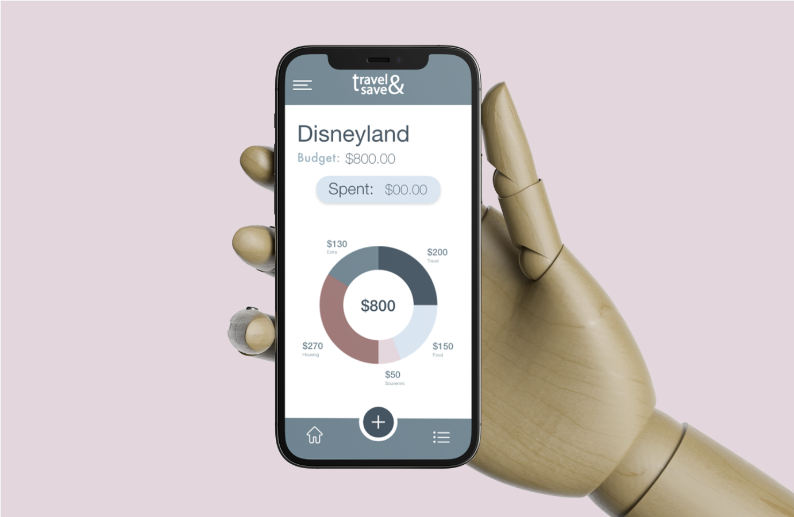
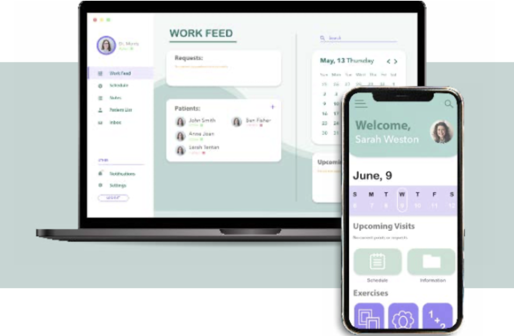
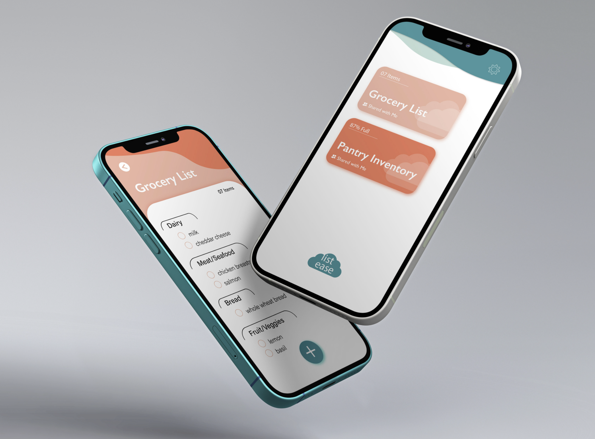

Hi, my name is Makayla Rockwood.
I'm a UI/UX designer based in the North American Pacific Northwest.

Travel and Budgeting App
This interaction design project was set to test the ability to create and test a calculator app. Within these guidelines I wanted to design a travel budgeting app. This would allow someone to be able to calculate their spending habits and be able to keep them within a specific range without going over.

Simple Cognition Mockup
This project was created to show the possibilities of making jobs and interactions easier and more accessible through desktop and mobile apps.
